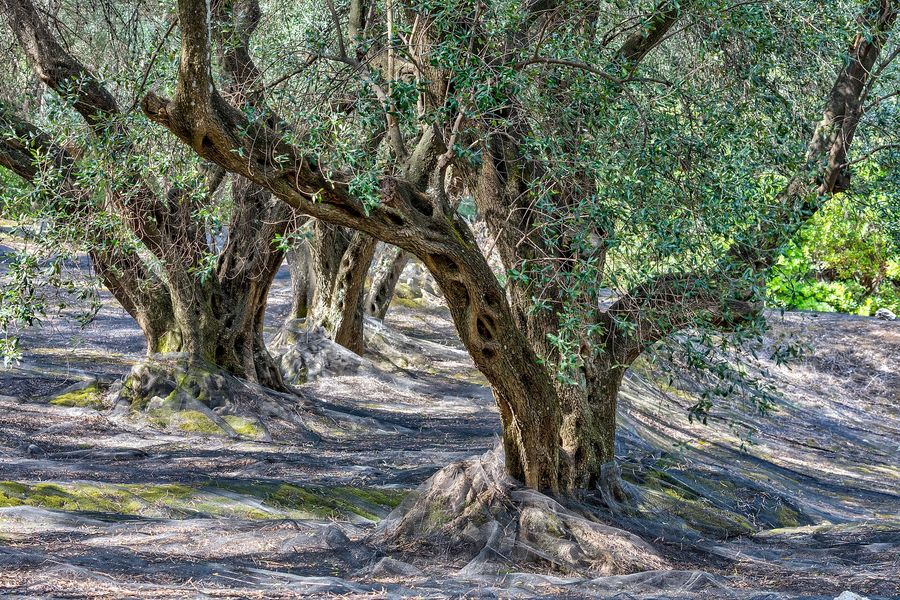

Olive ships in the catalog as a perennial tree crop. It has no stage model and no rule of its own, so it is watched with the general vegetation and moisture indices and the baseline alert.
Catalog only
| Field | Value |
|---|---|
| Code | olive |
| Arabic name | زيتون |
| Scientific name | Olea europaea |
| Category | fruit_tree |
| Perennial | yes |
| Indices that matter | ndvi |
A stage model and a set of olive rules would be the next thing to add. Olive is a candidate for the same treatment mango received.